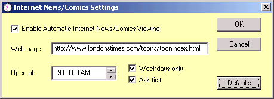

News/Comics
Automatically surf to your favorite News/Comics web page - such as Reddit.
Tell Pink Calendar the address of
your favorite web page and when you want to see it.
At the appointed time Pink Calendar will open the
web page in your web browser.

Note: Pink Calendar's day planner recognizes web addresses. See the tricks page.